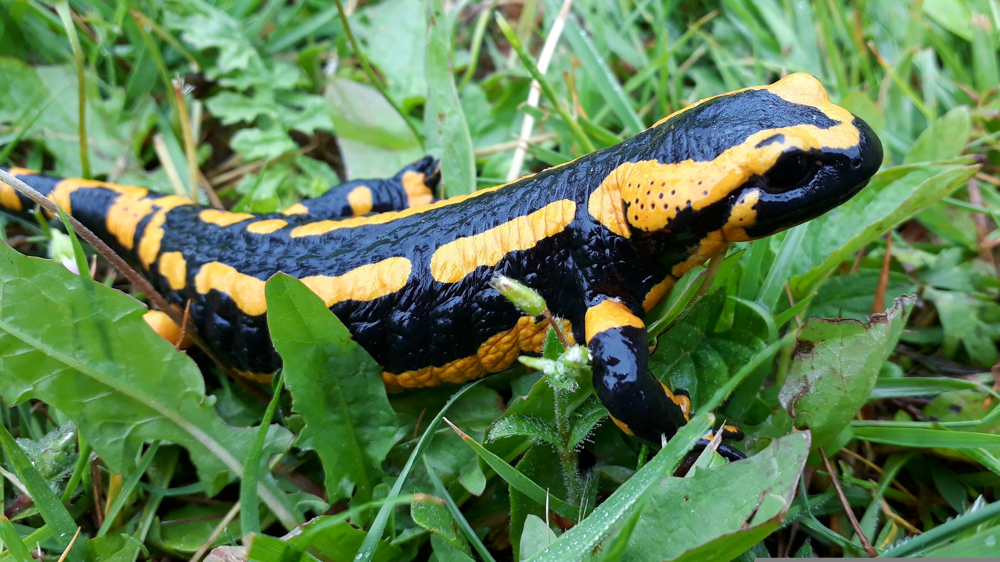

SALAMANDRA
Hábitat
Bosques húmedos y cerca de agua.

Características:
Descripción:
La salamandra es un anfibio de cuerpo alargado que vive en ambientes húmedos como bosques y zonas cercanas al agua. Se caracteriza por su piel suave y húmeda, y por su capacidad de regenerar partes de su cuerpo. Es un animal principalmente nocturno y se alimenta de insectos y pequeños invertebrados.